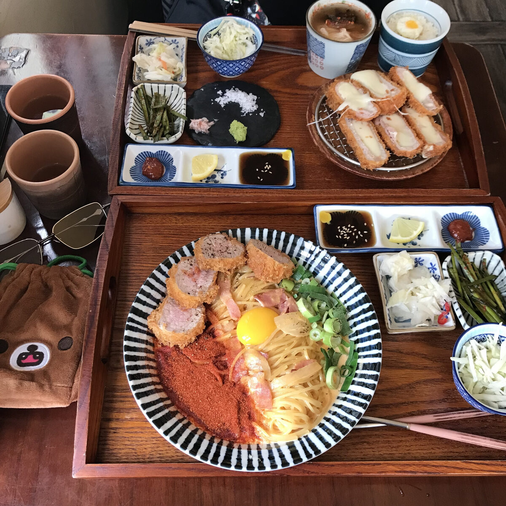
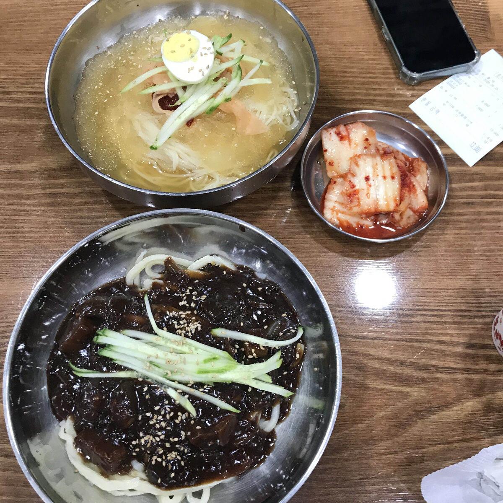
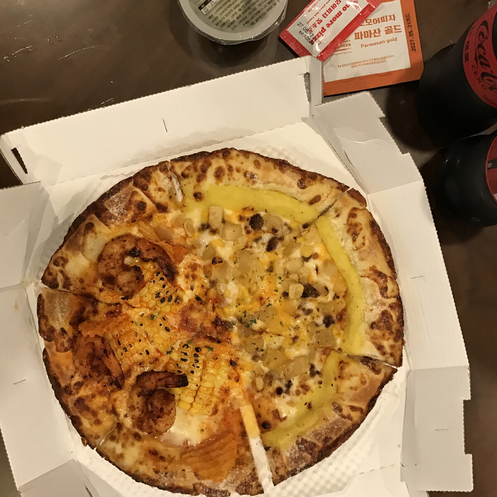

Welcome to Jingying's Kitchen
Sharing my passion for cooking
This website is where I share recipes I've tried or created, reviews of restaurants and dishes I enjoy, and my journey learning new cooking techniques. I hope to inspire you to try new recipes and discover delicious food.
New recipes are posted every week, so check back often!
What You'll Find Here
- Step-by-step recipes
- Honest restaurant reviews
- Tips for beginner cooks
- Photos of my favorite dishes
Quick Facts About This Site
- Started
- 2026
- Favorite Cuisine
- Sichuan cooking
- Update Schedule
- Weekly
A Taste of What's Inside



Want to learn more about food photography and recipe writing? I recommend checking out Serious Eats, one of my favorite food resources.